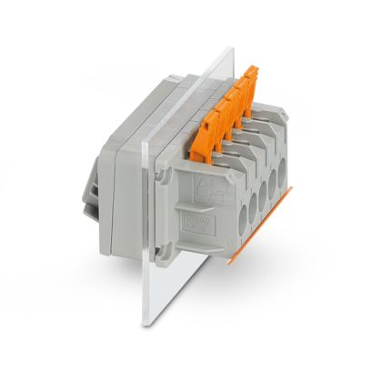
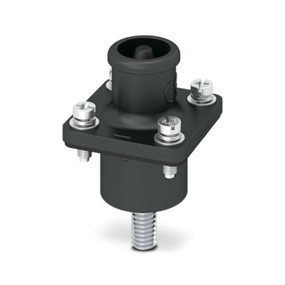
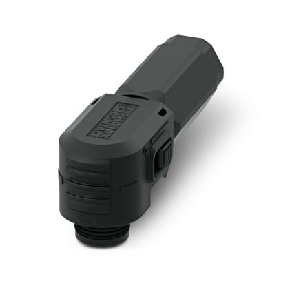
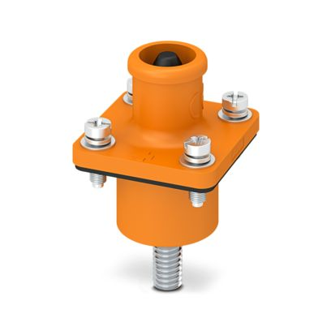
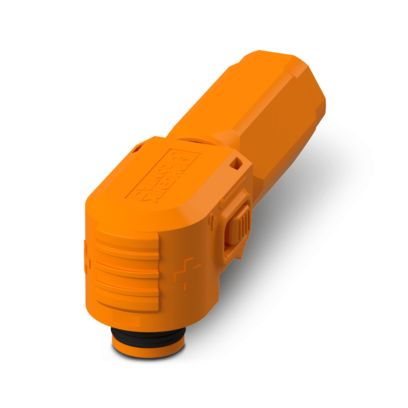

Detailed description
Detailed description of how to connect to and test with the HIL Electric Vehicle Charging Interface.
Communication Connection
In order to test the ISO 15118 vehicle to grid communication, the following terminals of a charging plug must be connected to the corresponding CP-PP-PE connector on the HIL Electric Vehicle Charging Interface:
- Control Pilot (CP)
- Proximity Pilot (PP)
- Protective Earth (PE)
Connection to the following charging plugs is supported:
- CCS Combo Type 1
- CCS Combo Type 2
- J1772
- Mennekes Type 2
- Supercharger
Connectors
To connect a signal, the same type of coil should be used for both the Power Amplifier and the EVSE. An example of the main connectors and which plugs they correspond to are shown in Table 1.
| Signal Type | Embedded Connector | Connector Plug |
|---|---|---|
| AC signal |  |
- |
| DC signal |  |
 |
 |
 |
Additional information on all connectors and interfaces is provided in the Mechanical section.
Signal Reading Flexibility
The HIL Electric Vehicle Charging Interface enables signal reading either via HIL I/O signals or via CAN connected to the HIL device. Signals can be configured to transmit values through CAN communication or via DIN I/O cables. This functionality offers users the flexibility to potentially utilize less I/O signals and read signals via CAN. However, it's important to note that while this solution is convenient for signal management, readings via CAN may have a precision deviation of up to 1% accuracy and introduce a time delay of approximately (10 ms). Reading signals through HIL I/O ensures higher precision and real-time data acquisition.
The configuration of these signals can be performed on-request as a service by a Hardware Engineer from Typhoon HIL.
| Pin | Device | Signal |
|---|---|---|
| AO5 | P-HIL | Connected_led |
| AO6 | P-HIL | Lock_led |
| AO7 | P-HIL | AC-Mode_led |
| AO8 | P-HIL | DC-Mode_led |
| AI7 | P-HIL | I_L1 |
| AI8 | P-HIL | I_L2 |
| AI9 | P-HIL | I_L3 |
| AI10 | P-HIL | U_L1 |
| AI11 | P-HIL | U_L2 |
| AI12 | P-HIL | U_L3 |
| AI13 | P-HIL | I_DC |
| AI14 | P-HIL | U_DC |
| AI15 | P-HIL | Lock_status |
| DO28 | P-HIL | DC_SW1 |
| DO29 | P-HIL | DC_SW2 |
| DO30 | P-HIL | AC_SW1 |
| DO31 | P-HIL | AC_SW2 |
I/O Pinout
The following tables provide a pinout description for the interconnection of the device with the HIL system using DIN cables, Table 3 specifies which pins are used for Analog Output (AO), Analog Input (AI), Digital Output (DO), and Digital Input (DI) on the HIL device, while the subsequent tables explain the functions of each pin.
| No. | Function | Usage in HIL System | Comment |
|---|---|---|---|
| 1 | Analog Output (AO) | 8 | CCS interface 4, P-HIL 4 |
| 2 | Analog Input (AI) | 15 | CCS interface 6, P-HIL 9 |
| 3 | Digital Output (DO) | 31 | CCS interface 27, P-HIL 4 |
| 4 | Digital Input (DI) | 1 | CP Scope in HIL |
| Pin | Device | Signal | Scale | Comment |
|---|---|---|---|---|
| AO1 | C-HIL | - | - | CCS Interface |
| AO2 | C-HIL | - | - | CCS Interface |
| AO3 | C-HIL | - | - | CCS Interface |
| AO4 | C-HIL | - | - | CCS Interface |
| AO5 | P-HIL | Connected_led | 1 | The signal adjusts the brightness of the diode on the front panel, and indicates whether the EV HIL connect is connected to the EV. |
| AO6 | P-HIL | Lock_led | 1 | The signal adjusts the brightness of the diode on the front panel, and shows whether the CCS socket has been successfully locked using the actuator |
| AO7 | P-HIL | AC-Mode_led | 1 | The signal adjusts the brightness of the diode on the front panel, and shows that the device is in AC charging mode. |
| AO8 | P-HIL | DC-Mode_led | 1 | The signal adjusts the brightness of the diode on the front panel, and shows that the device is in DC charging mode. |
| Pin | Device | Signal | Scale | Comment |
|---|---|---|---|---|
| AI1 | C-HIL | - | - | CCS Interface |
| AI2 | C-HIL | - | - | CCS Interface |
| AI3 | C-HIL | - | - | CCS Interface |
| AI4 | C-HIL | - | - | CCS Interface |
| AI5 | C-HIL | - | - | CCS Interface |
| AI6 | C-HIL | - | - | CCS Interface |
| AI7 | P-HIL | I_L1 | See comment | Current measurement of phase L1 scale from 0 to 50 Arms reading value from 0 V to 7.071 Vrms, where 50 Arms indicates a reading of 7.071 Vrms. |
| AI8 | P-HIL | I_L2 | See comment | Current measurement of phase L2 scale from 0 to 50 Arms reading value from 0 V to 7.071 Vrms, where 50 Arms indicates a reading of 7.071 Vrms. |
| AI9 | P-HIL | I_L3 | See comment | Current measurement of phase L3 scale from 0 to 50 Arms reading value from 0 V to 7.071 Vrms, where 50 Arms indicates a reading of 7.071 Vrms. |
| AI10 | P-HIL | U_L1 | See comment | Voltage measurement of phase L1 scale from 0 to ±500 Vrms reading value from -10 V to +10 V, where 500 Vrms indicates a reading of +10 V. |
| AI11 | P-HIL | U_L2 | See comment | Voltage measurement of phase L2 scale from 0 to ±500 Vrms reading value from -10 V to +10 V, where 500 Vrms indicates a reading of +10 V. |
| AI12 | P-HIL | U_L3 | See comment | Voltage measurement of phase L3 scale from 0 to ±500 Vrms reading value from -10 V to +10 V, where 500 Vrms indicates a reading of +10 V. |
| AI13 | P-HIL | I_DC | See comment | Current measurement DC scale from -250 A to 250 A reading value from -10 V to +10 V, where 250 A represents a value of +10 V. |
| AI14 | P-HIL | U_DC | See comment | Voltage measurement of DC scale from 0 to ±1500 Vrms reading value from -10 V to +10 V, Where 1500 Vrms indicates a reading of +10 V. |
| AI15 | P-HIL | Lock_status | See comment | The value depends on the type of CCS connector 24V or 12V.
|
| Pin | Device | Signal | Scale | Comment |
|---|---|---|---|---|
| DO1 | C-HIL | - | - | CCS Interface |
| DO2 | C-HIL | - | - | CCS Interface |
| DO3 | C-HIL | - | - | CCS Interface |
| DO4 | C-HIL | - | - | CCS Interface |
| DO5 | C-HIL | - | - | CCS Interface |
| DO6 | C-HIL | - | - | CCS Interface |
| DO7 | C-HIL | - | - | CCS Interface |
| DO8 | C-HIL | - | - | CCS Interface |
| DO9 | C-HIL | - | - | CCS Interface |
| DO10 | C-HIL | - | - | CCS Interface |
| DO11 | C-HIL | - | - | CCS Interface |
| DO12 | C-HIL | - | - | CCS Interface |
| DO13 | C-HIL | - | - | CCS Interface |
| DO14 | C-HIL | - | - | CCS Interface |
| DO15 | C-HIL | - | - | CCS Interface |
| DO16 | C-HIL | - | - | CCS Interface |
| DO17 | C-HIL | - | - | CCS Interface |
| DO18 | C-HIL | - | - | CCS Interface |
| DO19 | C-HIL | - | - | CCS Interface |
| DO20 | C-HIL | - | - | CCS Interface |
| DO21 | C-HIL | - | - | CCS Interface |
| DO22 | C-HIL | - | - | CCS Interface |
| DO23 | C-HIL | - | - | CCS Interface |
| DO24 | C-HIL | - | - | CCS Interface |
| DO25 | C-HIL | - | - | CCS Interface |
| DO26 | C-HIL | - | - | CCS Interface |
| DO27 | C-HIL | - | - | CCS Interface |
| DO28 | P-HIL | DC_SW1 | - | For opening and closing contactor DC_SW1. The contactors are in the initial state normally open (NO). DO = 0 V, SW = Open DO = 10 V, SW = Close |
| DO29 | P-HIL | DC_SW2 | - | For opening and closing contactor DC_SW2. The contactors are in the initial state normally open (NO). DO = 0 V, SW = Open DO = 10 V, SW = Close |
| DO28 | P-HIL | AC_SW1 | - | For opening and closing contactor AC_SW1. The contactors are in the initial state normally open (NO). DO = 0 V, SW = Open DO = 10 V, SW = Close |
| DO28 | P-HIL | AC_SW2 | - | For opening and closing contactor AC_SW2. The contactors are in the initial state normally open (NO). DO = 0 V, SW = Open DO = 10 V, SW = Close |
| Pin | Device | Signal | Scale | Comment |
|---|---|---|---|---|
| DI1 | C-HIL | - | - | CCS Interface |
| DI2 | C-HIL | - | - | CCS Interface |
| DI3 | C-HIL | - | - | CCS Interface |
| DI4 | C-HIL | - | - | With this pin, the current value of the CP (Control Pilot) signal can be read through the Scope. |
CAN Message Information
Table 8 outlines the available CAN Bus control messages. These messages are used to monitor and control the CCS plug for safety or operation purposes. They provide essential feedback to ensure the system functions correctly and can respond appropriately to changing conditions.
| Signal | Message ID | R/W | Value | Start Bit | Type | Data Length | Description |
|---|---|---|---|---|---|---|---|
| motor_lock | 1 | W | 9 | 0x8 | Int | 8 bits | Motor lock status (1: locked, 2: unlocked) |
| motor_Unlock | 1 | W | 10 | 0x8 | Int | 8 bits | Motor lock status (1: locked, 2: unlocked) |
| pt1000_dc_p_temp | 1 | R | Temp | 0x8 | Float | 8 bits | Temperature of PT1000 sensor on DC+ |
| pt1000_dc_n_temp | 1 | R | Temp | 0x10 | Float | 8 bits | Temperature of PT1000 sensor on DC- |
| ptc_temp | 1 | R | Temp | 0x18 | Float | 8 bits | Temperature of PTC sensor |
A description of each variable is as follows:
- motor_lock: This variable controls the locking mechanism of the motor. Setting motor_lock triggers the motor to move to the locked position (sets Motor lock status to 1).
- motor_Unlock: This variable controls the locking mechanism of the motor. Setting motor_Unlock triggers the motor to move to the Unlock position (sets Motor lock status to 2).
- pt1000_dc_p_temp: This represents the temperature measured by the PT1000 temperature sensor connected to the DC positive terminal. The variable pt1000_dc_p_temp holds the temperature value read from this sensor.
- pt1000_dc_n_temp: This represents the temperature measured by the PT1000 temperature sensor connected to the DC negative terminal. The variable pt1000_dc_n_temp holds the temperature value read from this sensor.
- ptc_temp: This represents the temperature measured by the PTC (Positive Temperature Coefficient) sensor. The variable ptc_temp holds the temperature value read from this sensor.